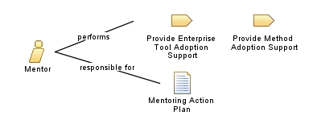

| Role: Mentor |
 |
|
Relationships
 |
||
| Primary Performs | ||
|---|---|---|
| Additionally Performs | ||
| Modifies |
|
|
Main Description
This role has the ability to raise the expertise of less experienced practitioners. Key responsibilities include:
|
Staffing
| Skills | Technical skills:
Non-technical skills (People skill/soft skills):
|
|---|
Key Considerations
| Without leadership and mentoring skills, one cannot be effective in this role. Only a strong leader is effective in "leading change." |
Licensed Materials - Property of IBM |